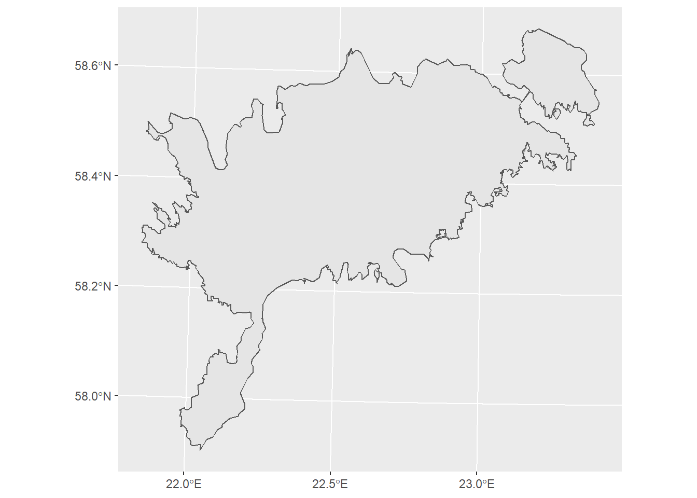

Praktikum 20 Ruumiandmete analüüs R-iga
Lae Moodle’ist alla tänase praktikumi fail, paki see lahti ning aseta need failid enda selle kursuse kausta. Ava Rstudio ning seal ava fail ruumiandmed_r.rmd, valides ülevalt vasakust nurgast File -> Open file.
20.1 Pakettide installimine
Kuna paljud teist kasutavad R-i esimest korda, siis kõigepealt installime vajalikud paketid. Selleks jooksuta siin all olev kood, klikkides kooditüki paremal üleval nurgas rohelisele nupule (Run current chunk). Selle tulemusena tõmbab R kõik vajalikud paketid ja installib need. Sellega võib minna natuke aga. Kui protsess on lõppenud, siis kaob konsooli paremas nurgas väike punane STOP-märk. Paketid tuleb alati uuesti laadida, kui oled vahepeal Rstudio sulgenud.
Kui paketid on installitud, siis tuleb teha veel üks väike muudatus, et faili vaatamine oleks mugavam. Nimelt ei peaks koodi jooksutamise tulemust kohe siin koodi all näitama. Selleks Tools -> Global options -> Rmarkdown ning võta ära linnuke Show output inline for all Rmarkdown documents eest ja seejärel all servas OK.
Viimase asjana paneme paika Working directory. Siin kasutame seda peamiselt selleks, et saaks andmeid lugeda lähtuvalt nende asukohast seoses selle faili asukohaga. Sellepärast palusingi teil panna see fail samasse kausta, kus on ka teie andmete kaust. Working directory seadistamiseks ülevalt menüüribalt Session -> Set working directory -> To source file location. See järel jooksuta alljärgnev kood. Kui kõik on õigesti, peaks tulemuseks olema selle faili asukoht. Minul on see näiteks “C:/teaching/geohumcourse”.
20.2 Miks teha kaarte koodipõhiselt?
Miks vaevata ennast ja võib-olla ka teisi koodi õppima, kui saame (võrdlemisi) samasuguseid kaarte teha ka QGISis või mõnes veebirakenduses, nagu näiteks MapBox? Miks üldse midagi koodipõhiselt teha? Meie näeme, et sel on mitu eelist. Erinevalt nn musta kasti ja point-and-click tarkvaradest jääb koodi kirjutades selge jälg sellest, mida tehti. See aitab nii endal kui ka teistel paremini mõista, kuidas antud tulemuseni jõuti. See suhestub eelkõige teadusmaailmas reprodutseeritavuse teemadega. Samas lihtsustab kood enda tööprotsesse oluliselt. Eriti juhtudel, kus andmed võivad vahepeal täieneda või tuleb teha mitmeid sarnaseid asju. Näiteks olukord, kus tegid lõputöö või publikatsiooni jaoks kaardi ning kuu aega hiljem palub juhendaja või toimetaja paari detaili kaardil muuta. Ülejäänud kaart aga peaks jääma täpselt samaks. Samas oled vahepeal aga rohkelt enda ruumiandmetega edasi tegelenud. Millised olid täpselt kasutatud andmed, värvid, joone paksus, mõõtkava, mudeldamiseks kasutatud meetod jpm? Koodis on see info kõik olemas. Niisiis pole tarvis kogu kaarditegemise protsessi uuesti läbi teha, vaid muuta koodis vajalikud detailid.
20.3 R, Rstudio ja Rmarkdown
R on vabavaraline väga võimas programmeerimiskeel ja keskkond andmeanalüüsiks, statistilisteks arvutusteks ning andmete visualiseerimiseks. R pakub väga palju statistilisi ja graafilisi meetodeid ning on hästi laiendatav. Üks selle tugevaid külgi on just võimalus teha kõrge kvaliteediga jooniseid ja graafikuid. Kuna tegu on koodipõhise tarkvaraga, siis annab see kasutajatele suhteliselt vabad käed ning võimaldab vastavalt vajadusele luua uusi funktsioone.
Paketid ehk teegid (package) on R-i põhiline jagatava koodi nn ühik. Pakettide eesmärk on lisada mingeid funktsioone. Paljud paketid tulevad R-iga kohe kaasa, aga üldiselt peab neid juurde installima. Hetkel on R-i kodulehel cran.r-project.org/ üle 14000 paketi. Pakett koosneb koodist, andmetest, dokumentatsioonist ning testidest ja seda on lihtne teistega jagada.
RStudio on R-i integreeritud arenduskeskkond (integrated development environment ehk IDE). See koosneb konsoolist, tekstiredaktorist ning tööriistadest graafikute tegemiseks, koodi silumiseks, kogu keskkonna ja ajaloo majandamiseks jpm. RStudiost on nii vabavaraline kui ka kommertsversioon. Meie kasutame vabavaralist.
).](imgs/20_rstudio_ui.png)
Figure 20.1: Rstudio kasutajaliidese peamised osad (viide).
Rmarkdown on formaat tavalise teksti ning koodi kombineerimiseks, mis seetõttu võimaldab kirjutada täielikult reprodutseeritavaid artikleid, raamatuid, raporteid ning koostada veebilehti, interaktiivseid lahendusi jpm. Nii see juhend kui ka kogu kursuse materjalid on kirjutatud Rmarkdownis.
Rmarkdown koosnebki tavaliselt tekstist nagu see siin.
# Ning kooditükkidest nagu see siin. Kooditükid on Rstudios kolme ` vahel.
# Trellids tähistavad kommentaari ning seda koodi jooksutamisel ei arvestata.
# See on lihtsalt inimesele lugemiseks.20.3.1 Kood
Vaatame mõnda näidet koodist, et mõista, kuidas üldiselt asjad töötavad.
## [1] 16Väärtustele (ja ka andmestikele, funktsioonidele jm) saab anda nime ning järgnevates osades kasutada seda.
## [1] 10Rohkemate väärtuste puhul on hea võimalus demonstreerida funktsiooni kasutamist.
## [1] 16Funktsiooni puhul kirjutatakse kõigepealt nimi ning sellele järgnevad sulud, kus saab funktsiooni parameetritele väärtuseid anda. Kombineerime funksiooniga c väärtustest nimekirja ning liidame funktsiooniga sum kõik nimekirja väärtused kokku.
## [1] 3 7 2 4## [1] 1620.4 Joonised ja kaardid R-is
Ggplot2 on väga populaarne R-i pakett andmete visualiseerimiseks. See on ka osa Tidyverse’i pakettide kogumiku osa. Sellega saab teha nii kõiksugu jooniseid kui ka kaarte. Pakett põhine kontseptsioonil Grammar of Graphics, mis võimaldab luua jooniseid kombineerides erinevaid komponente. Samas ei ole tegemist mingi etteantud graafikute valikuga, vaid neid saab kombineerida ja muuta vastavalt oma vajadustele. Sisuliselt toimub komponentide lisamine kihtidena pisut sarnaselt sellele, kuidas oleme siiani QGISi teinud. Kõigepealt lisatakse toorandmed, ning seejärel kokkuvõtted neist ja kõikvõimalikud märkused ja lisad.
Ggplot2 paketi põhielemendid:
- andmed: andmestik, mida tahetakse kujutada
- geomeetria
geom_: geomeetrilised kujundid, mis esindavad andmeid. Nt punktid, jooned, alad. - esteetika ehk välimus
aes(): objektide asukoht, värv, suurus, kuju, läbipaistvus - mõõtkava
scale_ - statistilised kokkuvõtted
stat_ - koordinaatsüsteem
coord_ - tahud
facet_: visualiseerimine korraga mitmel tahul. graafikute ruudustiku loomine - visuaalne teema
theme(): visuaalse poole vaikimisi sätted. Taust, font, teljed jne.
20.5 Ruumiandmed
20.5.1 Andmete avamine
Andmete avamiseks kasutame vastavalt andmestikule sobivaid funktsioone. Tabelandmestiku puhul nt read_csv ja vektorkujul ruumiandmete puhul st_read.
maakonnad = st_read("./andmed/maakond_lihtsustatud.gpkg")
# Seda koodi võiks lugeda järgmiselt. *Ava selle Rmarkdown failiga samas kaustas
# olevast kaustast *andmed* fail maakond_20201001.shp ja anna sellele nimeks maakonnad.
kirikud = st_read("./andmed/kirikud.gpkg")
malestised = st_read("./andmed/kultuurimalestised.gpkg")
# avame Saaremaa ja Tartumaa asustuse kihid.
saare_asustus = st_read("./andmed/saaremaa_asustus.gpkg")
tartu_asustus = st_read("./andmed/tartu_kylad.gpkg")20.5.2 Kaartide tegemine
Teeme ggplotiga kaardi.
Lisame rohkem elemente kaardile.
ggplot() +
geom_sf(data = maakonnad,
color = "red",
fill = "#fec44f") +
geom_sf(data = kirikud, color = "blue", size = 3) +
coord_sf(crs = 3301) +
annotation_scale(location = "bl") + #
labs( # Lisame pealkirja ja muu olulise teksti
title = "Eesti maakonnad ja kirikud",
subtitle = "Oktoorber 2020 seisuga",
caption = "Andmed: Maa-amet 2020"
) +
theme_map()20.5.3 Andmete filtreerimine ja ühendamine
Ruumiandmete filtreerimine, ühendamine jms käib R-is valdavalt samamoodi nagu teiste andmete puhul. Selleks on meil kasutada dplyr pakett, mis võimaldab paari funktsiooni abil suure osa andmetöötlusest ära teha.
Soovime näiteks teha kaarti Saaremaa asustusüksustest, mille esmamainimine on olnud hiljemalt aastal 1500.
# Filtreerime maakondadest Saaremaa välja
saaremaa = maakonnad %>%
filter(
MNIMI == "Saare maakond"
)
# kontrollime, kas kõik toimis
ggplot(saaremaa) +
geom_sf()
Välja tuleb filtreerida ka õige vanusega külad.
Teeme neist kaardi.
ggplot() +
geom_sf(saaremaa, mapping = ggplot2::aes(),
show.legend = T) +
geom_sf(data = saare_asustus_vana,
mapping = ggplot2::aes(shape = asustusyksus, color = esmamainimine), size = 3,
) +
coord_sf(crs = 3301) +
annotation_scale(location = "br") + # lisame mõõtkava. "br" tähendam bottom right
labs(
title = "Saaremaa asustus aastani 1500",
caption = "Andmed: Maa-amet 2020, EKI Kohanimeraamat"
) +
# peidame taustal oleva koordinaatteljestiku
theme(rect = element_blank(),
axis.text.x = element_blank(),
axis.text.y = element_blank(),
axis.ticks = element_blank()
)Vaatame ka näidet, kuidas saab andmeid ühendada ja neist kokkuvõtteid teha. Näiteks soovime teha kaardi, mis näitaks kirikute arvu maakonnas. Kirikud on meil aga hetkel punktidena. Niisiis tuletame kirikute andmestikust kiriku arvu igas maakonnas ja ühendame selle maakondade kihiga
# Grupeerime kirikute andmestiku tulba "MK_NIMI" alusel ja loeme kokku kirikud.
kirikud_maakonniti = kirikud %>%
group_by(MK_NIMI) %>%
summarise("kirikuid" = n())## `summarise()` ungrouping output (override with `.groups` argument)# ühendame maakondade kihi just tehtud uue andmestikuga tulpade põhjal, kus on kirjas
# maakond.
maakonnad_kirikutega = maakonnad %>%
st_join(x = ., y = kirikud_maakonniti, by = c(MNIMI = "MK_NIMI"))
# Paneme kokku kaardi ja määrame HEX koodidega värviskaala.
ggplot(maakonnad_kirikutega) +
geom_sf(mapping = aes(fill = kirikuid)) +
scale_fill_gradient(
low = "#ffffcc",
high = "#fc4e2a",
space = "Lab",
na.value = "grey50",
guide = "colourbar",
aesthetics = "fill"
) +
# peidame taustal oleva koordinaatteljestiku
theme(rect = element_blank(),
axis.text.x = element_blank(),
axis.text.y = element_blank(),
axis.ticks = element_blank()
)20.5.4 Ülesanne
Tee kaart, kus on kujutatud Tartu maakonna asustusüksusi, mille esmamainimine jääb Põhjasõja eelsesse aega. Kirjuta kood all olevasse kooditükki. Saad kombineerida täpselt sama koodi, mida varem kasutasime.
20.5.5 Kaartide eksportimine
Kaarte saab eksportida paremal olevast Plots aknast valides Export. Samuti võib koodi lõppu lisada funktsiooni ggsave("failinimi.jpg"). Seejärel salvestatakse fail Working directory asukohta, mida saad vaadata funktsiooniga getwd().